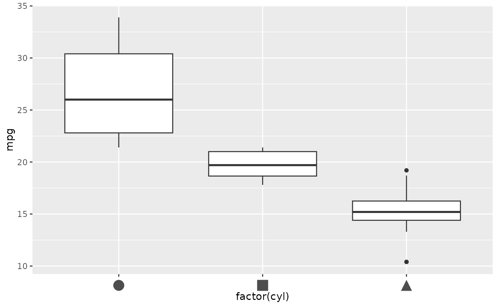
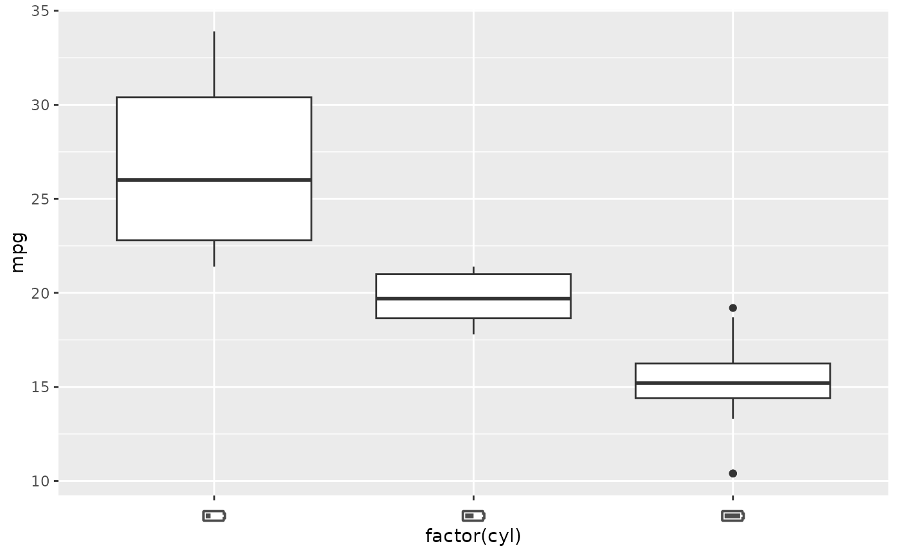

A theme element parallel to ggplot2::element_text(), for use in
axis.text, strip.text, legend.text, and similar theme settings.
Any label matching a name in icons is drawn as that icon; every other
label falls back to plain element_text() drawing.
Arguments
- icons
A named
list()of icon objects (see Details), orNULL(the default) to disable icon substitution.- ...
Other arguments passed on to
ggplot2::element_text().- size
Point size for text, and the point width/height for icons.
- colour
Colour for text, and the fill colour for icons.
- inherit.blank
Value
An element_icon object: a subclass of element_text (itself a
ggplot2 theme element), for use in ggplot2::theme().
Details
icons is a named list() of individual, length-1 icons, one entry per
label to replace:
element_icon(icons = list(
low = icons::fontawesome$solid$`battery-quarter`,
high = icons::fontawesome$solid$`battery-full`
))Examples
library(ggplot2)
# bundled placeholder shapes; a real pack (e.g. icons::fontawesome) works the same
shapes <- icons::icon_set(system.file("icons", package = "ggicons"))
cyl_icons <- list(
`4` = shapes$circle,
`6` = shapes$square,
`8` = shapes$triangle
)
ggplot(mtcars, aes(factor(cyl), mpg)) +
geom_boxplot() +
theme(axis.text.x = element_icon(icons = cyl_icons, size = 14))

# a real icon pack (here, Font Awesome) works the same way
battery <- list(
`4` = icons::fontawesome$solid$`battery-quarter`,
`6` = icons::fontawesome$solid$`battery-half`,
`8` = icons::fontawesome$solid$`battery-full`
)
ggplot(mtcars, aes(factor(cyl), mpg)) +
geom_boxplot() +
theme(axis.text.x = element_icon(icons = battery, size = 14))
